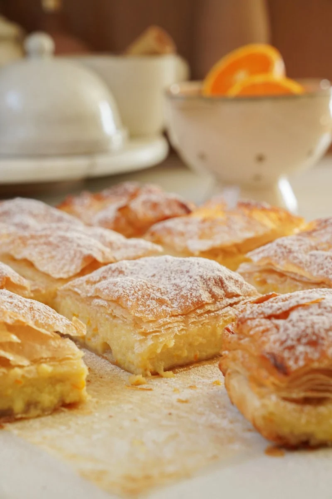

Home
Bougatsa

Description
Bougatsa,is a Greek breakfast food (sweet or savoury).
Bougatsa has several versions with their own filling,
with the most popular the bougatsa krema (bougatsa cream)
that has semolina custard filling used as a sweet food and dessert.
The name comes from the Byzantine Greek πογάτσα (pogátsa),
from the ancient Roman pānis focācius, literally 'hearth bread';
comparable with the Italian "focaccia".
Ingredients
For the custard
- 750 g whole milk
- 180 g granulated sugar
- 75 g semolina, fine
- 1 tablespoon(s) vanilla extract
- lemon zest, of 1 lemon
- 45 g butter, cold
- 3 egg yolks, of medium eggs
For the phyllo
- 450 g hard flour
- 10 g salt
- 220 g water, at room temperature
- 50 g butter, melted
- 450 g butter, melted
To serve
Steps
For the custard
- In a pot, add the milk and sugar, and transfer over medium heat until the milk comes to a boil.
- Add the semolina and stir with a hand whisk, until the cream thickens.
- Remove from the heat and add the vanilla extract, lemon zest, cold butter, and mix until the butter melts.
- Add the yolks, salt, and mix.
- Transfer the custard into a bowl, cover with plastic wrap, and place it into the refrigerator to cool well. Make sure that the plastic wrap touches the surface of the custard, so it does not make a crust while cooling.
For the phyllo
- In a mixer's bowl, add the flour, salt, water, and 50 g of the melted butter.
- Beat with the paddle attachment for 5-7 minutes at high speed, until there is an elastic dough.
- Remove from the bowl, cover with plastic wrap, and let it rest for 20 minutes.
- Remove the plastic wrap and cut into 4 pieces. Shape into balls and place them into a bowl. Cover with plastic wrap and let the dough rest for 20 more minutes.
- Take two of the dough balls and roll them out into small discs. Spread them onto a baking pan, cover with plastic wrap, and let them rest for 20 minutes.
To assemble
- Preheat the oven to 170° C (338° F) set to fan.
- Spread your working surface with melted butter and place the first dough. Roll it out softly with a rolling pin, not from the center but from its sides.
- Then, carefully spread the sides of the dough all around with your hands, by pulling the corners of the dough.
- Follow the same process, until you have a very thin phyllo.
- Spread ¼ of the butter and cut strips around the phyllo in order to form a parallelogram. Place the strips in the center of the phyllo.
- Add half of the filling in the center and close it like a folder. Set aside.
- Roll out the second dough in the same way, and spread ¼ of the melted butter.
- Place the bougatsa in the center of the phyllo, with the folded side facing down. Roll softly with the rolling pin, and fold the outer phyllo like a folder.
- Transfer the bougatsa, with the folded side facing down, into a baking pan lined with parchment paper and bake for 40-50 minutes.
- Follow the above process for the other two doughs as well. You can bake the second bougatsa too, or you can put it in the freezer.
To serve
- Cut the bougatsa into small pieces, dust with icing sugar, cinnamon, and serve.
Home